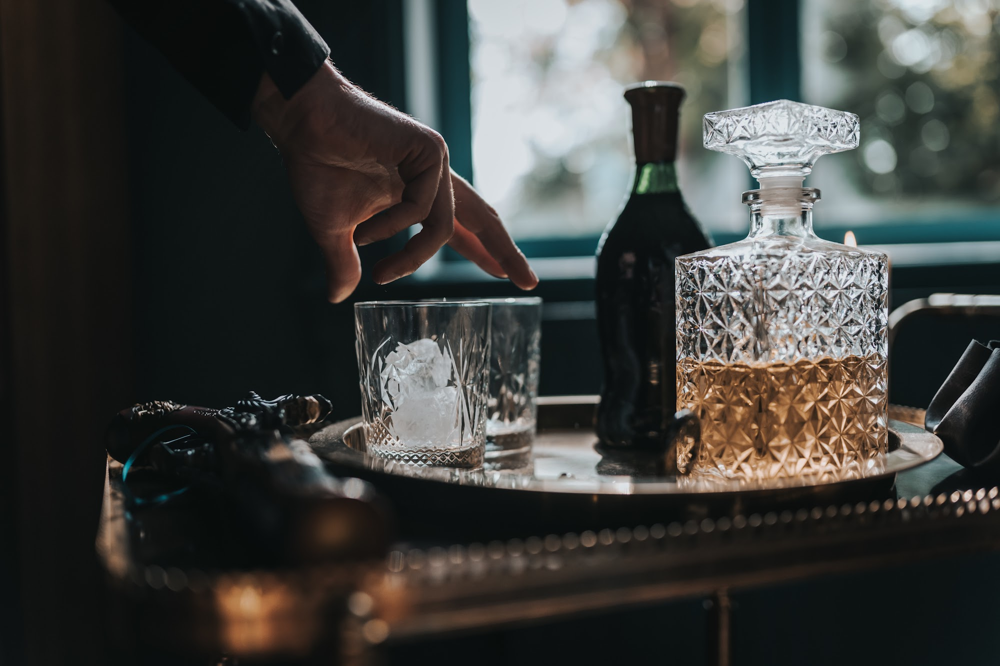
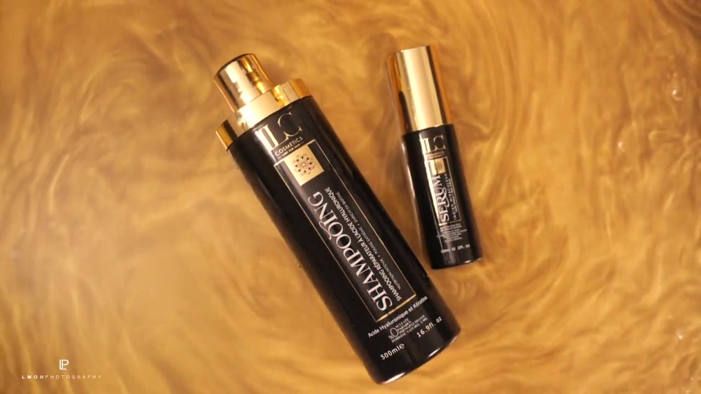

E-Commerce Product Photography: White Background or Styled Staging?
When creating images for an online store or a brand launch, choosing the right photographic style is essential. Should you opt for clean packshots on a plain white background or rich, textured styled setups? As a product photographer near Lyon, France, I guide brands to blend these two approaches for maximum impact.

The White Background Packshot: Pure Clarity and Precision
Plain white backgrounds are the gold standard for e-commerce listings and wholesale catalogs. They isolate the item completely, removing distractions so customers can examine every detail, seam, or finish.
Achieving clean packshots requires technical accuracy to eliminate unwanted reflections and accurately render colors. It builds buyer confidence and significantly lowers product return rates.

Creative Staging: Building Atmosphere and Brand Storytelling
While a white background informs, creative styling evokes feeling. By incorporating natural light, props, and organic textures, styled photography places your product in a lifestyle context.
For cosmetics, food, or luxury goods, styled scenes communicate your brand values instantly. Soft daylight and carefully selected background elements create engaging imagery ideal for social media and website headers.

Combining Both Styles for a Complete E-Commerce Strategy

The most successful digital brands use a balanced mix of both techniques. Styled hero images capture attention on landing pages and ad campaigns, while clean packshots close the sale on individual product pages.
Based in Auvergne-Rhône-Alpes, near iconic locations around Lyon and the Alps, we can structure a photo session to capture both styled lifestyle imagery and clean catalog assets in one efficient shoot.
Texture, Detail, and Natural Light in Product Shoots
Working with authentic daylight adds a tactile quality that artificial studio lighting sometimes lacks. It brings out the softness of skincare creams, the sparkle of glass, or the weave of natural fabrics.
Focusing on close-up details highlights craftmanship and quality. Every reflection, shadow, and surface tone is calibrated to make your creation stand out effortlessly.

Frequently asked questions
Should I choose white background or styled photos for a new online store?
A combination of both works best. Clean packshots provide clarity on product pages, while styled lifestyle images build emotional appeal on your homepage and social channels.
Where does the product photoshoot take place near Lyon, France?
Sessions can be held in my studio near Lyon, at your workshop or store, or in carefully selected outdoor locations across the region.
Do you offer product video creation alongside photography?
Yes, I create cinematic short videos and brand teasers designed specifically for website banners and social media campaigns.
How should I prepare my products before the photo session?
Select flawless items without scratches or packaging flaws. Clean glass or metallic surfaces thoroughly and pack extra items just in case.
Get in touch to discuss your product photography project and elevate your brand image near Lyon, France.
Let’s talk about your project